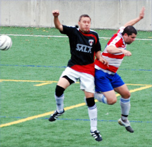
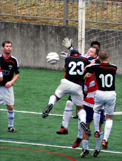

|
OiFuto, Saturday 1st September,
The Swiss weren’t given an easy task in their first game of the ’07-’08 season, matched up with traditional rivals Sala. Great day on the turf at Oifuto, that is one of the benefits of playing against the league organizer, some quality pitches to play on. Sala looked its familiar self with a solid defensive lineup, speed across the midfield, but the same forward line which meant goals were going to be tough to come by. The Swiss looked their old and grizzled selves, with 5 usual starters out with injury or away on business trips, what a way to start the season.
The first 3 minutes of the game looked pretty good for the Swiss with a few passes connecting and the occasional run but for the next 36 minutes, Sala dominated. Passes around midfield were swift and the movement out of the back through midfield was great. They put together some beautiful footy and it was tough to watch looking back at the Swiss goal. They looked the better side, winning almost every tackle and really working hard for it. Unfortunately, they just could not break down the Swiss defense with a shot on goal. No one would take on anyone in the box, the quality of the crosses were poor, rarely causing danger. The Swiss defense was marshalled by Krando and he did well, as did Phillip and Koin, but Sala made it easy for them. There was no forward who could play with his back to goal and hold it up. The midfielders were forced to shoot from distance and Peter Pauli smothered most of those quite easily.
It must have been frustrating for them to dominate so completely but to come away with nothing. The Swiss had a few chances, with Dave Pratt sending across one ball to an unmarked Kirk only for him to head towards the corner flag. Watanabe sent in a beautiful ball for Karl only to see him completely miss the volley. Karl sent Kirk in for a 1 on 1 vs. Sid but he got down well to knock the shot away. Fortunately for the Swiss, in the last minute of the half, they were awarded a free kick about 35 meters out. Krando blasted in a low shot towards goal with Kirk rushing to meet it. The ball went off a defender’s leg to wrong-foot Sid and into the net for a very lucky 1-0 lead as the whistle blew about 30 seconds later.
The second half started similarly although some of the new boys for the Swiss started to show a little better decision making. However, Sala was the better side. The midfield did some great things but the forwards could not find a way through the defense. Instead, the Swiss started to look a little more dangerous with better ball control. More shots came from overlapping midfielders, the most dangerous was a follow up from Ogata who just volleyed wide after Sid parried a Krando free-kick. In the end, the match was settled as a result of a mistake by Sid in goal. Karl sent in a corner kick towards Dave Pratt at the near post, he and the defender cut right in front of Sid who came out to punch it. Unfortunately, it went in off his hands into the goal. It wasn’t pretty but a 2-0 lead with the best of Sala behind them meant it was going to be difficult. In the closing 15 minutes, the midfield for Sala continued to work very hard. Kirk dropped back to help out in defense and JP substituted half the team to wind up the match. It was very lucky for the Swiss but that is typically the way things go for them against Sala. It won’t come so easy against the Hibs or the BFC, so let’s get it together for next week’s match!
Report by Kirk Neureiter
|